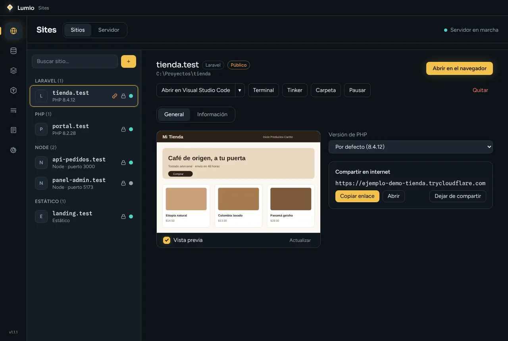
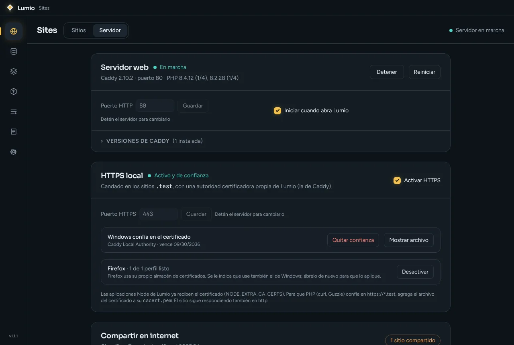
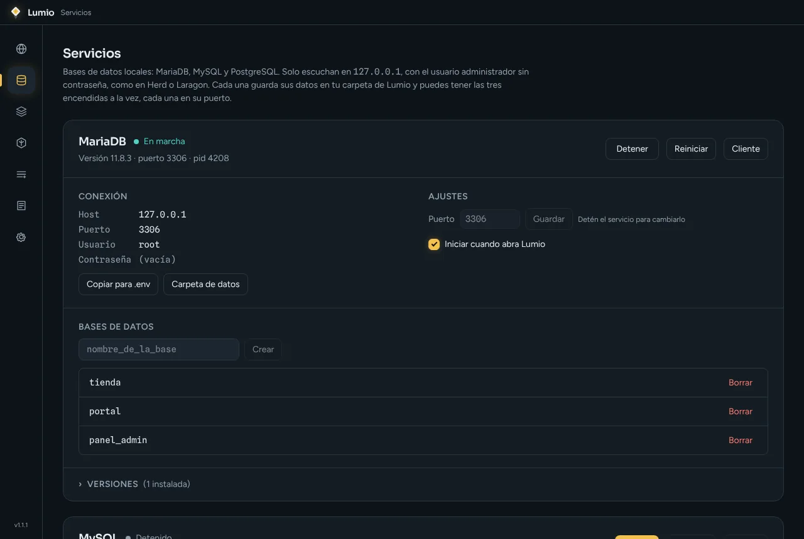
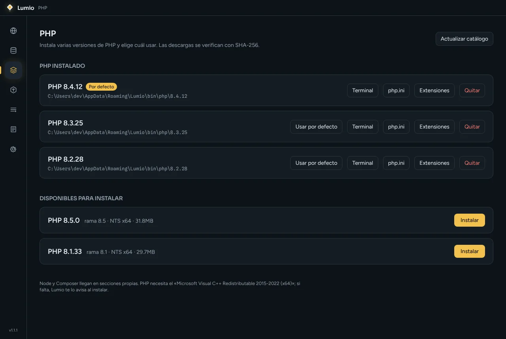
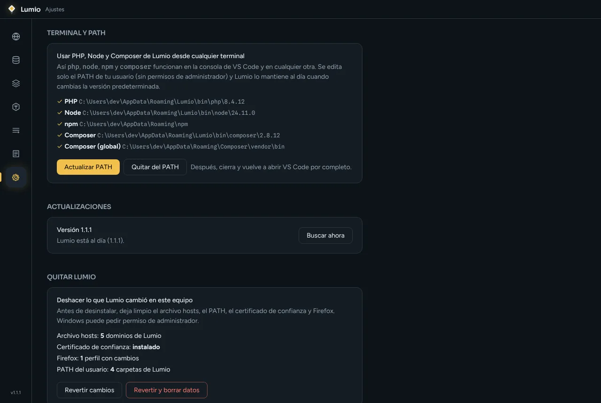

~/sitios
Sitios con HTTPS
Sites with HTTPS
Agrega la carpeta de un proyecto y queda disponible en nombre.test, con candado y vista previa.
Add a project folder and it is available at name.test, with a padlock and a live preview.
Tus sitios locales, listos en un clic. Sirve proyectos PHP, Laravel, Node y estáticos en dominios .test con HTTPS, con bases de datos y enlaces para compartir por internet, sin configurar nada a mano.
Your local sites, ready in one click. Serve PHP, Laravel, Node and static projects on .test domains with HTTPS, with built-in databases and links to share over the internet, with no manual setup.





Datos de ejemplo.Sample data.
Agrega la carpeta de un proyecto y queda disponible en nombre.test, con candado y vista previa.
Add a project folder and it is available at name.test, with a padlock and a live preview.
Instala varias versiones y elige cuál usa cada sitio, además de Composer.
Install several versions and choose which one each site uses, plus Composer.
MariaDB, MySQL y PostgreSQL locales, cada una en su puerto y con sus datos aparte.
Local MariaDB, MySQL and PostgreSQL, each on its own port with separate data.
Genera un enlace temporal con Cloudflare Tunnel para enseñar un sitio a un cliente.
Create a temporary Cloudflare Tunnel link to show a site to a client.
Abre el sitio en tu editor o en una terminal, y usa php, node y composer desde cualquier consola.
Open a site in your editor or a terminal, and use php, node and composer from any console.
Quitar Lumio revierte los cambios que hizo en el equipo y se actualiza solo.
Removing Lumio reverts the changes it made to the computer, and it updates itself.
Para que .test y el candado funcionen, Lumio registra los dominios de tus sitios en el archivo hosts, instala un certificado local de confianza y, si lo pides, añade sus carpetas al PATH de tu usuario. Todo se puede deshacer desde Ajustes → Quitar Lumio, que además limpia al desinstalar. Las descargas de PHP se verifican con SHA-256.
For .test and the padlock to work, Lumio registers your sites' domains in the hosts file, installs a trusted local certificate and, if you ask, adds its folders to your user PATH. Everything can be undone from Settings → Remove Lumio, which also cleans up on uninstall. PHP downloads are verified with SHA-256.